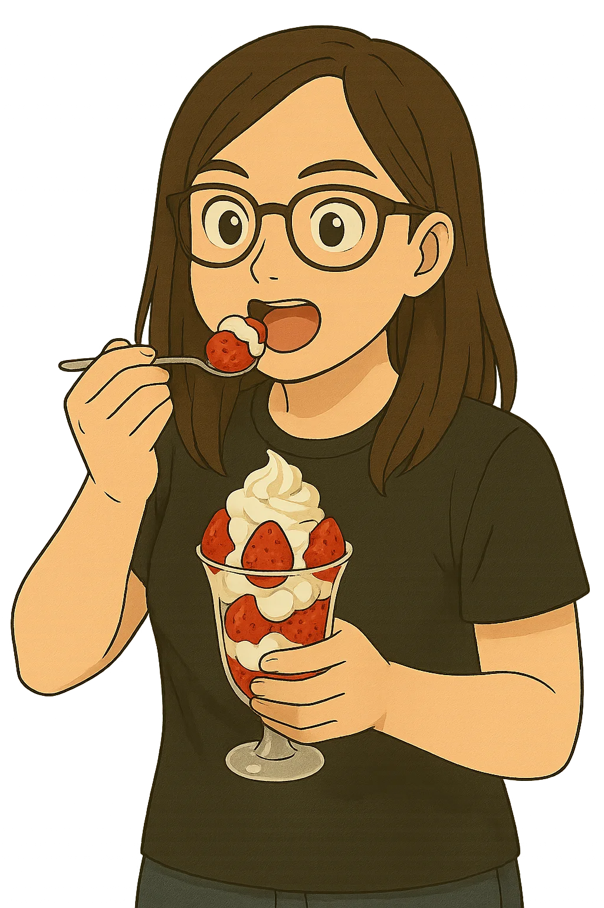
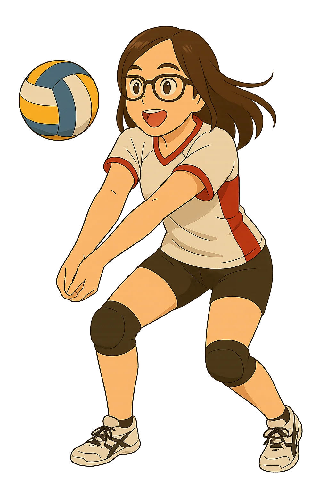

PERSONALIDAD
"Ella tiene una personalidad y una forma de ser verdaderamente únicas. Su manera de reaccionar ante la vida, su sentido del humor tan auténtico, y esa energía tan alegre que transmite, la convierten en alguien inolvidable. Estar a su lado es sentirse cómodo, comprendido y feliz, como si el mundo se volviera un lugar más ligero solo por su presencia."
SUS HERMOSOS GUSTOS
FRESAS CON CREMA
"Ama las flores, Stitch y las crispetas con salsa de tomate."
VOLEIBOL
"Le gusta el voleibol, regañarme, enojarse… y yo, feliz. Ah, y también el taekwondo."
VIDEOJUEGOS
"Ama Resident Evil, construir en Minecraft y jugar Roblox. Yo, feliz con cualquier juego… si es con ella."
LO QUE ÉL VE EN ELLA
Cuando él la mira, no ve solo a una mujer hermosa. Ve a la persona que esperó durante años, aquella que imaginó en sus pensamientos más sinceros. En sus ojos se refleja la sorpresa de haber encontrado a alguien que comparte sus pasatiempos, sus gustos, incluso su forma de ver el mundo. Ella no solo le roba la mirada, también le da calma, fuerza y propósito. Con ella, él no solo sueña —planea, construye, imagina un futuro. Y cada vez que la ve, sus ojos brillan como si la estuviera viendo por primera vez.